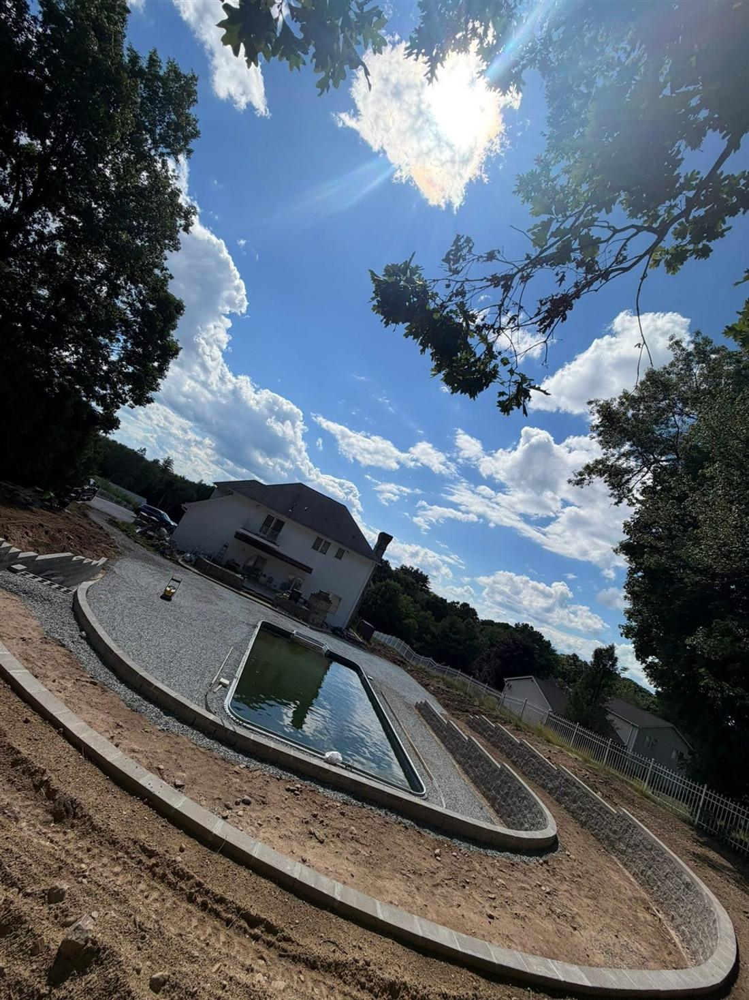

In-Ground Pool — Dig to Done
A sloped backyard turned into a full pool setup: excavation, grading, stone base, and the terraced hardscape to tie it all together. We shaped the slope into clean levels so the pool sits right and the yard drains right.
The gallery below shows this one coming together — from the first cut in the slope to the finished surround.